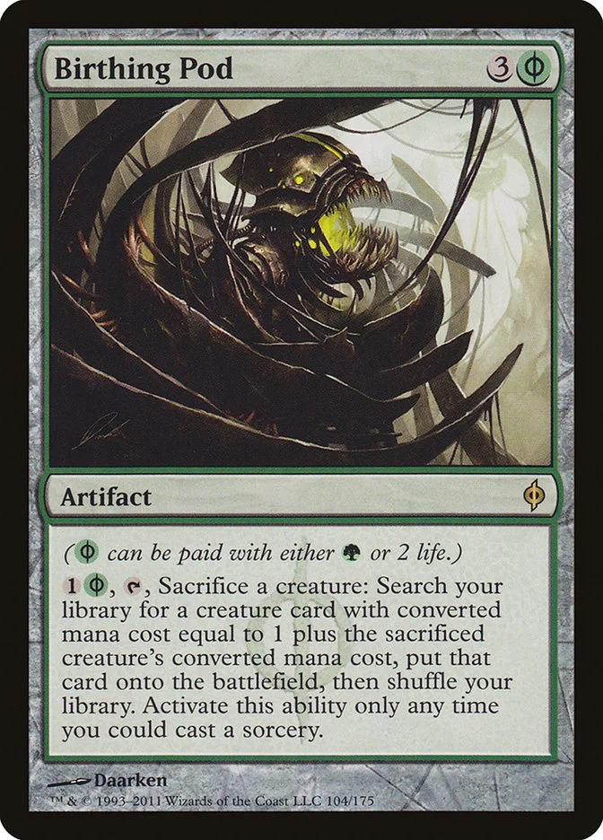
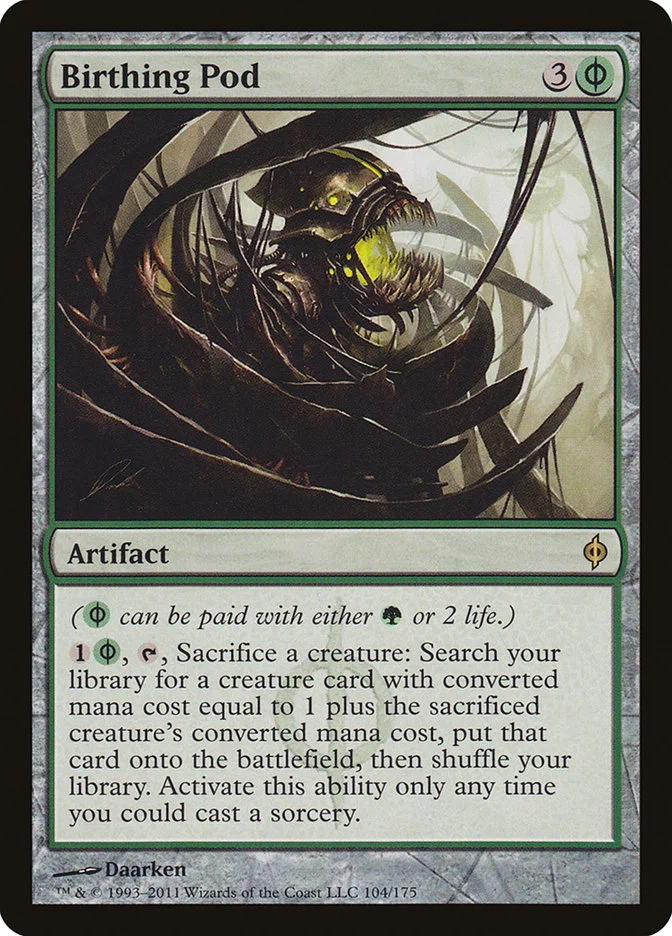

PreFIRE: A Community Created Magic: the Gathering Format
Over the years, formats like Modern have drawn us in,
with compelling gameplay and infinite replayability.
However, as time went by,
more and more discontent rose with the way WotC handled Magic: the Gathering.
An unstoppable and impossible to keep up with release schedule, paired with a level of power creep (inspired by the FIRE design philosophy) that has turned Modern and Legacy into virtually rotating formats as well as an unwillingness to listen to the community’s discontent regarding the state of current competitive formats has forced folks who were once heavily enfranchised players to leave the game behind, be it for monetary reasons or otherwise.
Our Discord Server is the best place to find decks, opponents, and info on preFIRE. Come join us!

The Pillars of PreFIRE
The idea for PreFIRE is that it should be a place where we can play cards that we currently can’t play in other contexts,
due to them being too good for Modern (or WotC being too cowardly to unban) while being not good enough for Legacy or other high powered formats.
For that reason there are certain “Pillars of the Format” that we actively want to be legal. These cards are:


 


We do not consider this list to be fixed and exhaustive.
If after playing the format we begin to see new Pillars appear,
if the community decides they are welcome we will decide whether they should be added to the pantheon.
About
For those folks who are nostalgic for the cards and game play that made Modern the most popular Magic: the Gathering format we have created PreFIRE. This is a fixed format born to channel the gameplay and aesthetics of this specific point in the history of Magic: the Gathering (from the beginning of Modern up until 2019) but with its own essence:
- The information we have access to now is different from what we knew back then. Decks like Grixis Death’s Shadow never existed while Splinter Twin was legal even though all of its cards were available simply because nobody figured it out. With what we know now, we finally get to experience new matchups that we had never seen before.
- Similarly, cards like Jace, the Mind Sculptor or Stoneforge Mystic were pre-banned in the Modern format, and then freed from the ban list many years afterwards, so we never knew how good these cards would have been in that previous context. On the other hand, we were somehow able to play with Gitaxian Probe for years and years and nobody chose to. We were all so innocent!
- The ban list we will be curating is different from every Modern ban list before, and specific to this format. This means we can actually engineer a format with the characteristics we find cool and interesting while rejecting those we dislike. This ban list will be flexible and updated regularly as we get a feel for the format.
- Being a fixed format limits the power level of certain cards, which can be allowed to thrive. Cards like Birthing Pod or Mox Opal are very nostalgic to certain folks, but understandably needed to be banned because as WotC continued to print more and more busted cards the power level of these synergy/engine pieces would skyrocket out of control, inevitably leading to a ban down the road.
- Because we don’t have to worry about that, we can curate a ban list that makes sure that the power level outliers that break these cards are the ones to get the axe, allowing for classic and cool decks like Pod and Affinity to exist and be on par with the power level we are looking for in the format while keeping the KCI’s of the world out of our lawn.